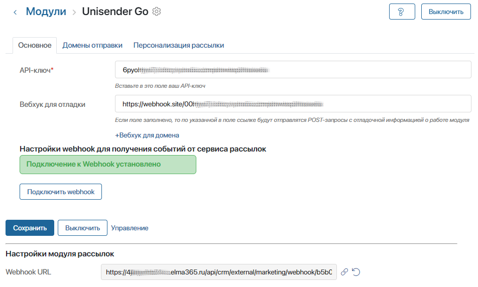
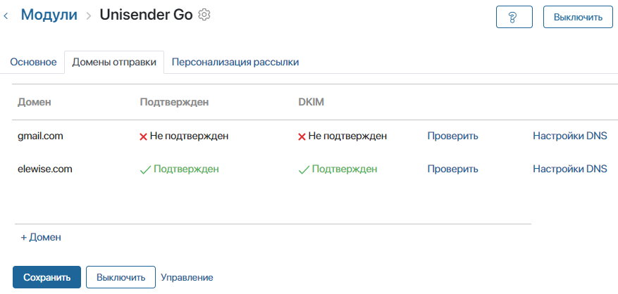
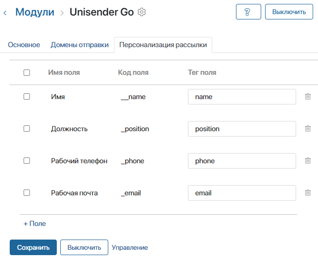

Unisender Go — это сервис для создания и отправки рассылок клиентам, который рассчитан на значительную нагрузку и позволяет отправлять большое количество писем.
Модуль интеграции с Unisender Go можно использовать в редакции Saas Enterprise и поставке On-Premises.
Начало внимание
Модуль не совместим с редакцией Saas Standard.
Конец внимание
Если у вас установлена Saas Standard, для этой редакции доступен модуль интеграции с сервисом Unisender.
Используя интеграцию с сервисом Unisender Go, вы можете:
- выполнять как триггерные рассылки, созданные в разделе Карты коммуникаций, так и массовые рассылки на электронную почту подписчиков;
- импортировать шаблоны писем для рассылок, созданные на стороне сервиса Unisender Go;
- персонализировать рассылки, т. е. настроить подстановку данных о подписчиках в шаблоны писем, например имя и контактные данные;
- получать со стороны сервиса статистические данные для формирования отчёта Вовлечённость.
Перед подключением модуля интеграции убедитесь, что ваш аккаунт в Unisender Go активен.
Начало внимание
Настраивать модули могут только пользователи, включённые в группу Администраторы.
Конец внимание
Подключить модуль
- Войдите в аккаунт Unisender Go и в его настройках скопируйте ключ доступа к API.
- Перейдите в раздел Администрирование > Модули, нажмите кнопку + Модуль, а затем Скачать.
- В каталоге ELMA365 Store выберите модуль Unisender Go и установите его.
- Поскольку модуль является платным, после пробного периода его нужно активировать в разделе Администрирование > Управление лицензиями.
- После успешной установки включите модуль и выполните настройки на трёх вкладках: Основное, Домены отправки, Персонализация рассылки.
Вкладка «Основное»
Здесь заполните поля:

- API-ключ* — вставьте ключ доступа к API, скопированный в настройках аккаунта Unisender Go;
- Вебхук для отладки — укажите ссылку, на которую будут отправляться данные о работе модуля. Например, ссылку можно получить на сайте https://webhook.site. Если возникнет ошибка в работе модуля, по указанной ссылке вы можете ознакомиться с информацией по отладке;
- Вебхук для домена — если адрес вашей компании находится в закрытой сети, укажите домен, по которому в закрытую сеть поступают данные из интернета. В этом случае события из Unisender Go будут передаваться в ELMA365 по указанному в этом поле домену;
- Webhook URL — поле заполняется автоматически и содержит вебхук, с помощью которого в ELMA365 будут передаваться события из сервиса Unisender Go. При использовании закрытой сети данные будут поступать по домену, указанному в поле Вебхук для домена.
После заполнения полей нажмите кнопку Подключить webhook, чтобы автоматически передать в сервис Unisender Go значение из поля Webhook URL. Если подключение установится, вы увидите уведомление об этом.
Вкладка «Домены отправки»
Здесь добавьте и активируйте ваши почтовые домены:

- Нажмите кнопку +Домен и в открывшемся окне введите имя почтового домена. Затем нажмите Добавить. Новая запись добавится в список доменов отправки.
- Чтобы активировать домен:
- в строке с именем домена нажмите Настройки DNS и скопируйте содержимое в открывшемся окне;
- добавьте скопированный текст настроек к записям вашего почтового домена на DNS-сервере.
- Дождитесь активации домена. Обновление доменных записей может занять продолжительное время. Информация о подтверждении активации появится в столбцах Подтвержден и DKIM.
- Для завершения настройки доменов нажмите Сохранить.
Вкладка «Персонализация рассылки»
Визуальный email-конструктор сервиса Unisender Go позволяет персонализировать текст отправляемого письма c помощью поддерживаемых шаблонизаторов. Подробнее о работе с ними читайте в официальной документации сервиса.
Чтобы при создании рассылки передавать данные контактов в сервис Unisender Go для их подстановки в шаблоны писем, выполните следующие настройки:

- Нажмите кнопку +Поле. В открывшемся окне вы увидите список полей карточки контакта в ELMA365, кроме тех, которые не могут быть обработаны шаблонизаторами.
- Выберите поля, значения которых вы хотите передавать в шаблоны писем на стороне сервиса Unisender Go. Затем нажмите Выбрать. Отмеченные поля добавятся на вкладку.
- Присвойте каждому полю тэг, заполнив ячейку в столбце Тег поля. Эти теги добавьте в шаблоны писем, используя редактор шаблонов. Также можно изменить шаблоны на стороне сервиса Unisender Go и потом импортировать их. Если шаблон письма содержит теги, на их место подставятся данные из соответствующих полей карточки контакта, которому будет отправлено письмо.
- Сохраните настройки.
После подключения модуля интеграции вы можете выбирать сервис Unisender Go в настройках триггерных и массовых рассылок, а также импортировать из этого сервиса шаблоны писем и настраивать в них персонализацию.